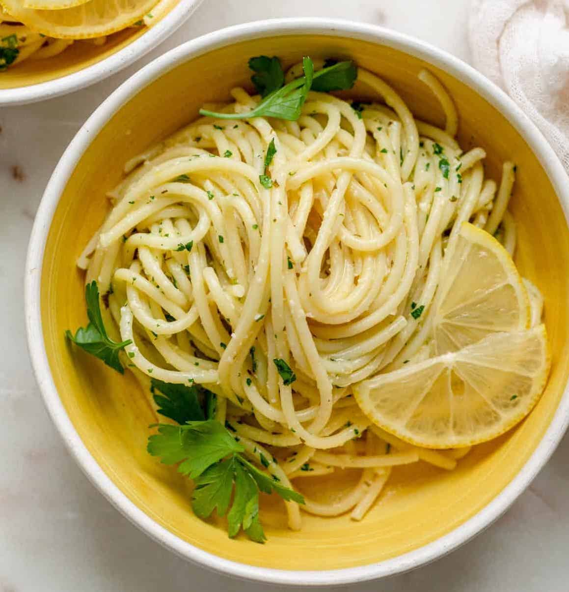

Lemon Pasta

Creamy, citrousy and just overall super easy to make! Credits to the pasta queen on
TikTok
Ingredients:
- Spaghetti
- Lemon
- Olive Oil
- Citrus Leaves
Preparation:
- In a pot filled with 4 cups of water add in the lemon peel & citrus peel.
Bring to a boil and then shut it off. Save until ready to use.
- Strain out the leaves & peel & pour the water, back into the pan and
bring to a boil. Add in 8 ounces of spaghetti along with some salt & olive oil.
Cook until al dente, if you need more water add it.
- Once the pasta is cooked, you should have some starchy water in the pan.
Zest in lemon zest & grate in some aged provolone, toss to make creamy.
Serve while hot.